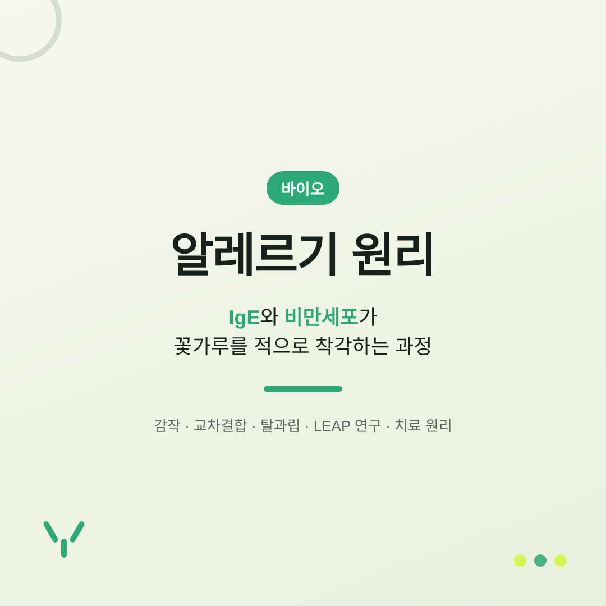
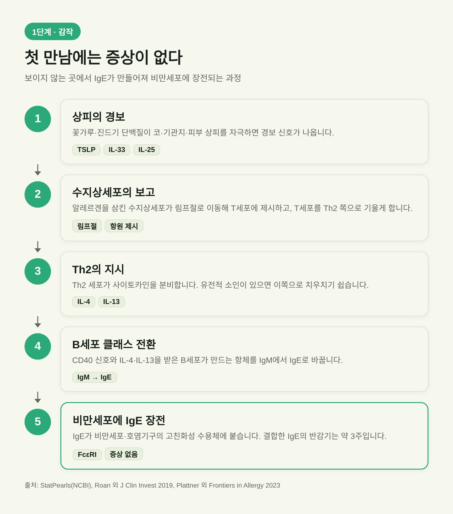
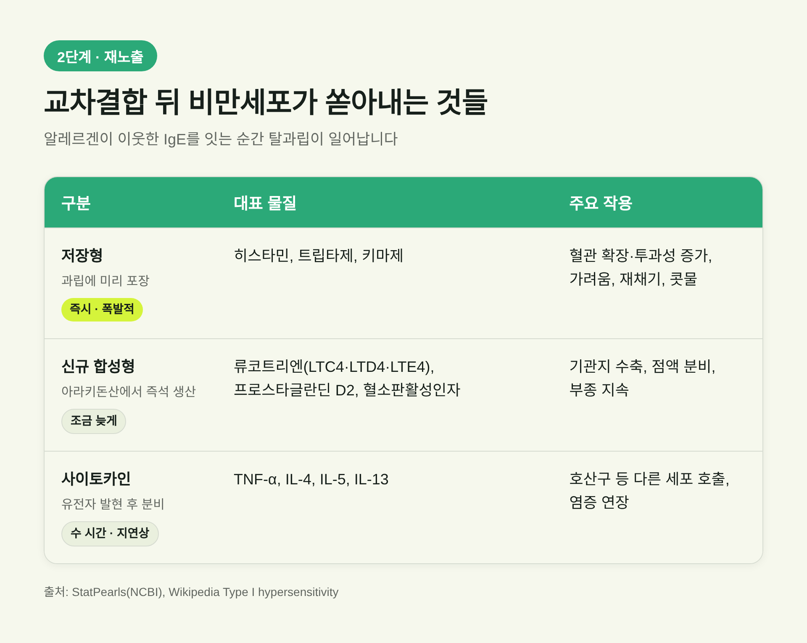
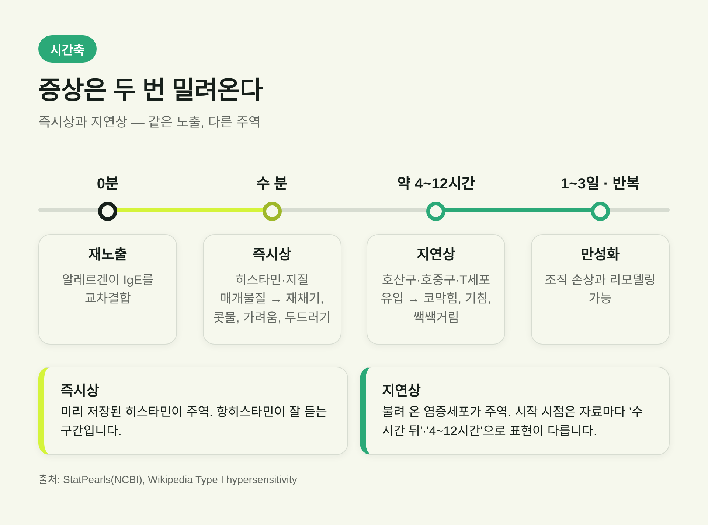
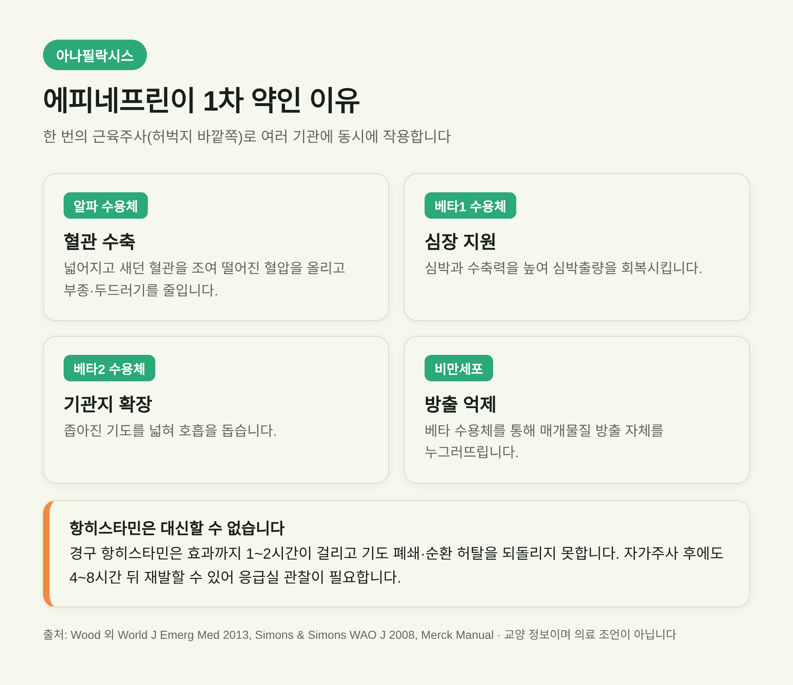
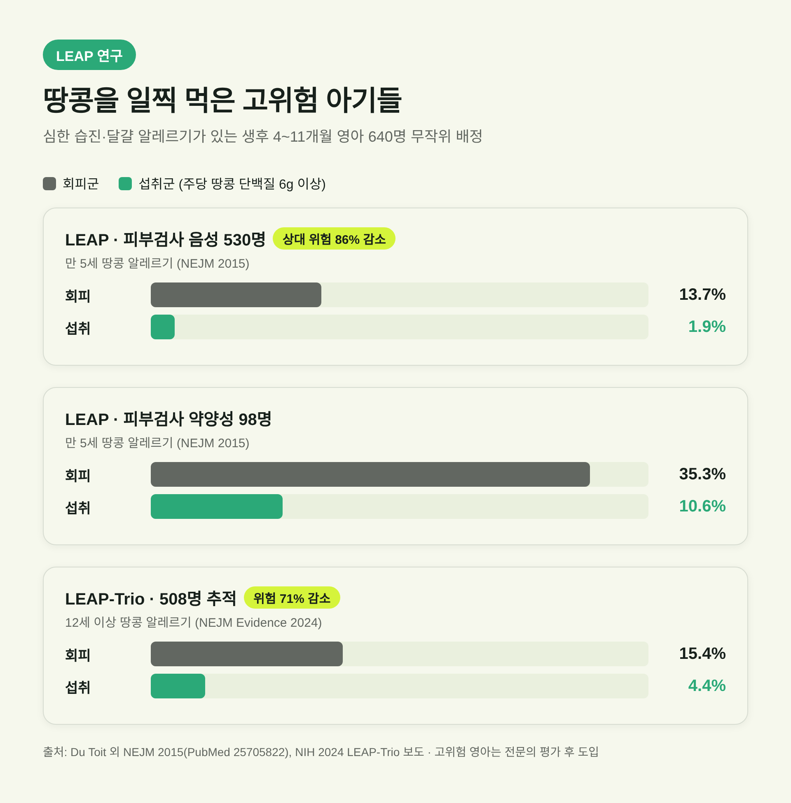
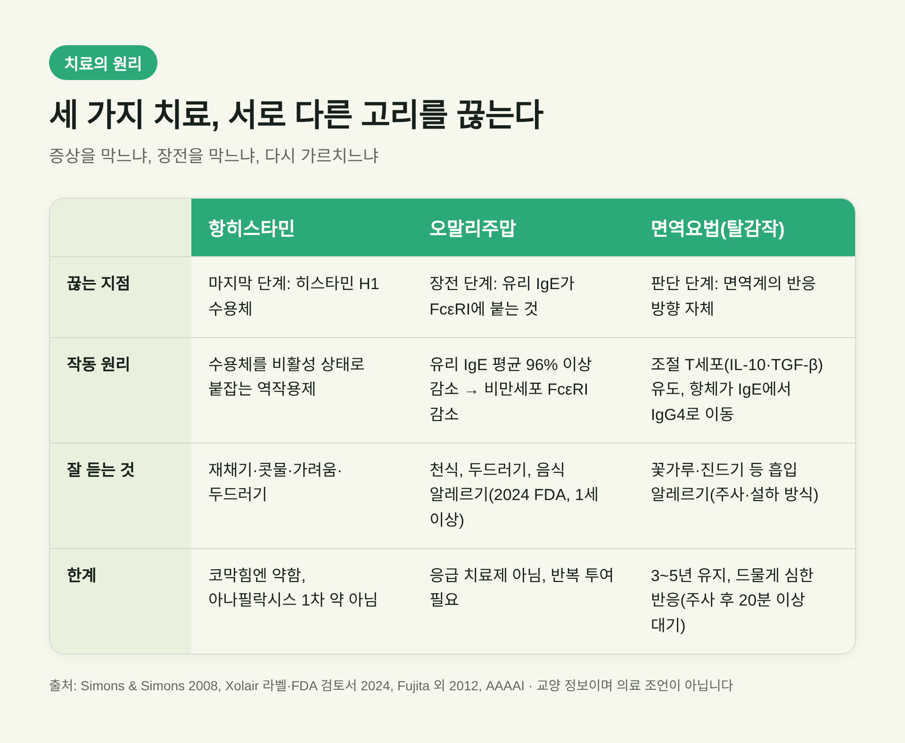

알레르기 원리, IgE와 비만세포가 꽃가루를 적으로 착각하는 과정

이번 글에서는 알레르기가 몸속에서 어떤 순서로 일어나는지 정리해 보겠습니다. 꽃가루나 땅콩처럼 해롭지 않은 물질에 면역계가 왜 전력으로 반응하는지, 그리고 약과 치료법은 그 과정의 어디를 끊는지까지 차례로 살펴봅니다.
먼저 세 줄로 요약하면 이렇습니다.
- 알레르기는 '첫 만남(감작)'에서 IgE 항체를 만들어 비만세포에 장전해 두고, '두 번째 만남'에서 방아쇠가 당겨지는 2단계 반응입니다.
- 히스타민은 수 분 안에, 류코트리엔과 호산구는 수 시간 뒤에 작동해 증상이 두 번 밀려올 수 있습니다.
- 땅콩을 피하던 예방법은 LEAP 연구 이후 '고위험 영아는 평가 후 일찍 먹인다'로 바뀌었습니다.
※ 이 글은 면역학 원리를 소개하는 교양 글이며 의료 조언이 아닙니다. 증상이 있거나 치료를 고민하신다면 알레르기 전문의와 상담하시길 권합니다.
■ 알레르기, 정확히는 '제1형 과민반응'
의학에서 흔히 말하는 알레르기는 제1형 과민반응을 가리킵니다. 이미 감작된 사람이 같은 항원을 다시 만났을 때, IgE라는 항체가 매개해 즉시 일어나는 반응입니다. 알레르기 비염, 결막염, 천식, 두드러기, 음식 알레르기, 그리고 아나필락시스가 모두 여기에 속합니다.
이 반응의 주인공인 IgE는 꽤 늦게 정체를 드러냈습니다. 1920년대 프라우스니츠와 퀴스트너는 알레르기 환자의 혈청을 다른 사람 피부에 주사하고 항원을 바르면 부풀어 오른다는 사실을 보였습니다. 혈청 속 무언가가 알레르기를 옮긴다는 뜻이었고, 이 인자는 '레아긴'이라 불렸습니다.
그 정체를 밝힌 것은 1966년 무렵 이시자카 기미시게·데루코 부부입니다. 레아긴이 기존의 IgM, IgG, IgA가 아닌 새로운 항체라는 것을 보였고, 스웨덴 연구진이 찾은 골수종 단백질과 같은 물질임이 확인된 뒤 IgE라는 이름이 붙었습니다. IgE는 혈청 속 항체 가운데 가장 양이 적습니다. 그 적은 양으로 온몸을 흔드는 반응을 일으킨다는 점이 알레르기의 핵심 수수께끼입니다.
■ 1단계 감작 — 첫 만남에는 아무 일도 일어나지 않는다
알레르기의 첫 단계는 조용합니다. 꽃가루나 집먼지진드기 단백질이 코, 기관지, 피부의 상피에 처음 닿아도 대개 증상은 없습니다. 그러나 그 아래에서는 준비가 시작됩니다.
순서는 대략 다음과 같습니다.
- 상피의 경보 — 손상되거나 자극받은 상피세포가 TSLP, IL-33, IL-25 같은 경보 신호를 냅니다. 일부 알레르겐이 지닌 단백분해효소는 이 신호를 더 키웁니다.
- 수지상세포의 보고 — 알레르겐을 삼킨 수지상세포가 림프절로 이동해 T세포에게 보여 줍니다. 경보 신호를 받은 수지상세포는 T세포를 'Th2'라는 유형으로 기울게 만듭니다.
- Th2의 지시 — Th2 세포는 IL-4와 IL-13을 분비합니다. 유전적 소인이 있는 사람일수록 이쪽으로 치우치기 쉽습니다.
- B세포의 클래스 전환 — 같은 알레르겐을 알아본 B세포가 Th2와 맞닿아 CD40 신호와 IL-4·IL-13을 받으면, 만들던 항체를 IgM에서 IgE로 바꿉니다.
이렇게 만들어진 알레르겐 특이 IgE는 혈액을 떠돌다 비만세포와 호염기구 표면의 수용체 FcεRI에 달라붙습니다. 이 결합은 매우 단단합니다. 친화도가 10⁻¹⁰ M 수준으로 보고되며, 수용체에 붙은 IgE는 반감기가 약 3주에 이릅니다. 비만세포가 특정 꽃가루를 겨눈 '안테나'를 잔뜩 꽂은 채 대기하는 셈입니다.

■ 2단계 재노출 — 교차결합이 방아쇠를 당긴다
같은 꽃가루가 다시 들어오면 상황이 달라집니다. 알레르겐 한 분자가 비만세포 표면에 이웃한 IgE 여러 개를 다리처럼 잇습니다. 이를 교차결합이라 합니다. 교차결합은 세포 안으로 신호를 보내고, 비만세포는 과립을 터뜨립니다. 탈과립입니다.
이때 나오는 물질은 두 부류로 나뉩니다.
| 구분 | 대표 물질 | 주요 작용 |
|---|---|---|
| 미리 만들어 둔 물질(과립 저장) | 히스타민, 트립타제, 키마제 | 혈관 확장·투과성 증가, 가려움, 재채기, 콧물 |
| 새로 합성하는 물질(아라키돈산 유래) | 류코트리엔(LTC4·LTD4·LTE4), 프로스타글란딘 D2, 혈소판활성인자 | 기관지 수축, 점액 분비, 부종 지속 |
| 사이토카인 | TNF-α, IL-4, IL-5, IL-13 | 호산구 등 다른 세포 호출, 염증 연장 |
히스타민은 이미 포장된 상태라 즉시, 폭발적으로 쏟아집니다. 반면 류코트리엔과 프로스타글란딘은 세포막 지질을 원료로 그 자리에서 만들어지므로 조금 늦게 나옵니다. 이 시간차가 다음 절의 '두 번의 파도'로 이어집니다.

■ 즉시상과 지연상 — 증상은 두 번 밀려온다
알레르기 반응은 시간에 따라 두 국면으로 나뉩니다.
즉시상은 노출 후 수 분 안에 시작됩니다. 히스타민과 지질 매개물질이 혈관을 넓히고 신경을 자극합니다. 재채기, 콧물, 가려움, 두드러기가 이 시기에 나타납니다.
지연상은 수 시간 뒤에 찾아옵니다. 자료마다 시점 표현은 조금 다른데요. StatPearls는 '수 시간 뒤', 다른 정리 자료는 대략 4~12시간 뒤 시작해 1~3일 지속된다고 적습니다. 이 단계의 주역은 비만세포가 불러 모은 호산구, 호중구, T세포입니다. 코막힘, 기침, 쌕쌕거림이 오래 이어지는 이유입니다.
노출이 반복되면 문제는 만성화됩니다. 호산구가 내놓는 단백질이 조직을 상하게 하고, 기도나 피부의 구조 자체가 바뀌는 리모델링이 일어날 수 있습니다. 천식이 '발작'뿐 아니라 '만성 염증'으로 다뤄지는 배경이 여기에 있습니다.

■ 아나필락시스 — 국소 반응이 전신으로 번질 때
탈과립이 몸 전체에서 한꺼번에 일어나면 아나필락시스가 됩니다. 혈관이 동시에 넓어지고 새면서 혈압이 떨어지고, 기관지가 좁아지며, 목과 혀가 붓습니다. 순환부전까지 이르면 아나필락시스 쇼크라 부릅니다.
증상은 보통 노출 15분 이내에 시작됩니다. 흔한 원인은 견과류·달걀·해산물 같은 음식, 페니실린 등 약물, 벌 같은 곤충 독, 라텍스입니다. 치명적인 사례 분석에서는 노출 후 빠르면 5분 만에 사망 위험에 이를 수 있다고 보고됩니다.
여기서 1차 약은 에피네프린(아드레날린)입니다. 이유는 작용 범위에 있습니다.
- 알파 수용체 — 혈관을 수축시켜 떨어진 혈압을 올리고 부종을 줄입니다.
- 베타1 수용체 — 심장 박동과 수축력을 높여 심박출량을 회복시킵니다.
- 베타2 수용체 — 좁아진 기관지를 넓힙니다.
- 비만세포 — 베타 수용체를 통해 매개물질 방출 자체를 누그러뜨립니다.
항히스타민은 이 일을 대신하지 못합니다. 경구 항히스타민은 효과가 나기까지 1~2시간이 걸리고, 기도 폐쇄나 순환 허탈을 되돌리지 못합니다. 코크런 리뷰에서도 아나필락시스에 대한 H1 항히스타민의 근거는 확인되지 않았습니다.
에피네프린은 허벅지 바깥쪽 근육에 주사합니다. 약 35%의 환자는 두 번째 투여가 필요했다는 정리도 있습니다. 또 하나 중요한 점은 '재발'입니다. 4~8시간 뒤 또는 그 이후 증상이 다시 올라올 수 있어, 자가주사 후에도 응급실에서 관찰받아야 합니다. 국내에서는 에피네프린 자가주사기가 알레르기 전문 진료가 가능한 일부 병원에서만 처방되어, 대한천식알레르기학회가 2025년부터 처방 병원 검색 서비스를 운영하고 있습니다.

■ 왜 하필 꽃가루일까 — 진화와 '오래된 친구'
해로운 것도 아닌데 왜 이런 시스템이 있을까요. 한 가지 단서는 쥐 실험에서 나왔습니다.
2013년 스탠퍼드 연구진은 쥐에게 벌 한두 방 분량의 독을 먼저 주고, 3주 뒤 다섯 방 분량을 투여했습니다. 미리 노출된 쥐는 생존 가능성이 약 3배 높았습니다. IgE나 비만세포가 없는 쥐에게서는 이 보호 효과가 사라졌습니다. 같은 해 예일 연구진도 벌독 성분 PLA2에 대한 2형 면역반응이 쥐를 독성으로부터 지킨다고 보고했습니다. IgE 반응은 원래 독이나 기생충 같은 위협에 대비한 방어였고, 알레르기는 그 경보가 엉뚱한 대상에 울리는 것이라는 해석입니다. 다만 사람에게도 그대로 적용되는지는 아직 확인되지 않았습니다.
그렇다면 왜 현대에 알레르기가 늘었을까요. 1989년 영국의 스트라칸은 1958년 출생 코호트를 분석해, 손위 형제가 많을수록 11세와 23세의 꽃가루 알레르기가 적다는 것을 발견했습니다. 형제에게서 옮는 어린 시절 감염이 알레르기를 막는다는 '위생 가설'의 출발점입니다.
이 가설은 이후 크게 수정됐습니다. 2003년 그레이엄 룩이 제안한 '오래된 친구' 가설은 감기·홍역 같은 감염이 아니라, 인류와 오랜 세월 함께 진화한 미생물에 주목합니다. 흙과 환경의 미생물, 피부·장의 공생균이 면역계의 '조절 능력'을 길러 준다는 것입니다.
농촌 연구가 이를 뒷받침합니다. 유전 배경이 비슷한 미국의 두 농경 공동체 가운데, 전통 농법으로 가축과 가까이 사는 아미시 아동의 천식은 후터라이트 아동의 약 4분의 1, 알레르기 감작은 약 6분의 1 수준이었습니다(2016년 NEJM, 아동 60명). 아미시 집 먼지를 쥐에게 흡입시키자 알레르기성 기도 반응이 줄었고, 선천면역 신호 분자가 없는 쥐에서는 그 효과가 사라졌습니다.
한계도 분명합니다. 같은 논리로는 1형 당뇨나 다발성경화증 같은 자가면역질환의 증가를 설명하기 어렵고, 리노바이러스처럼 오히려 천식 위험을 높이는 감염도 있습니다. '위생'이라는 이름 때문에 손 씻기를 줄여야 한다는 오해가 생기기도 했습니다. 개인 위생과 알레르기의 연관은 뚜렷하지 않다는 연구가 있고, 학계에서는 '표적 위생'이라는 표현이 제안되었습니다. 가족 규모 효과의 정확한 기전은 지금도 풀리지 않았습니다.
■ 피부로 먼저 만나면 적, 입으로 먼저 만나면 친구 — LEAP 연구
음식 알레르기에는 또 다른 설명이 있습니다. 기디언 랙이 제안한 이중 알레르겐 노출 가설입니다. 손상된 피부를 통해 음식 단백질을 먼저 만나면 감작이, 입으로 먹어서 만나면 면역관용이 유도된다는 내용입니다. 습진이 있는 아기에게 음식 알레르기가 잦은 이유를 잘 설명합니다.
근거가 몇 가지 있습니다. 영국 맨체스터 코호트(577명)에서는 생후 1년 동안 거실 소파 먼지 속 땅콩 단백질이 3배 늘 때, 피부장벽 단백질인 필라그린 유전자 변이가 있는 아이의 땅콩 알레르기 위험이 약 3배 높아졌습니다. 변이가 없는 아이에게서는 뚜렷한 영향이 없었습니다. 또 유대계 학생을 비교한 2008년 연구에서 땅콩 알레르기는 영국 1.85%, 이스라엘 0.17%로 약 10배 차이가 났습니다. 이스라엘 영아는 생후 8~14개월에 한 달 평균 7.1g의 땅콩 단백질을 먹었고, 영국 영아는 거의 먹지 않았습니다.
이 가설을 정면으로 시험한 것이 LEAP 연구(NEJM 2015)입니다. 심한 습진이나 달걀 알레르기가 있는 생후 4~11개월 영아 640명을 무작위로 나눠, 만 5세까지 땅콩을 먹이거나 피하게 했습니다. 먹는 쪽은 일주일에 땅콩 단백질 6g 이상을 세 번 넘게 나눠 먹었습니다.
- 피부검사 음성 아기(530명): 땅콩 알레르기 회피군 13.7% vs 섭취군 1.9% — 상대 위험 86% 감소
- 피부검사 약양성 아기(98명): 회피군 35.3% vs 섭취군 10.6%
- 심각한 이상반응은 두 군 사이에 차이가 없었습니다.
효과는 오래갔습니다. 1년간 모두 땅콩을 끊게 한 LEAP-On에서도 6세 알레르기율은 18.6% 대 4.8%였습니다. 2024년 발표된 LEAP-Trio에서는 원래 참가자 508명을 12세 이상까지 추적했고, 15.4% 대 4.4%로 위험이 71% 낮았습니다. 6세 이후 땅콩을 먹은 양과 빈도는 제각각이었는데도 보호 효과가 유지됐습니다.
예전에는 고위험 아기일수록 땅콩을 늦게, 최대한 피하게 하라고 권했습니다. 지금은 다릅니다. 2017년 미국 NIAID 지침은 심한 습진이나 달걀 알레르기가 있는 영아에게 생후 4~6개월에 땅콩을 도입하되, 먼저 피부검사나 혈액검사로 평가받도록 권합니다. 핵심은 '일찍'보다 '평가 후 일찍'입니다. 고위험 아기에게 집에서 임의로 먹여 보는 것은 권하지 않습니다.

■ 치료는 연쇄반응의 어디를 끊는가
알레르기 치료는 앞서 본 연쇄반응의 서로 다른 지점을 겨냥합니다.
항히스타민 — 마지막 단계의 수용체를 막는다 H1 항히스타민은 단순히 수용체를 가리는 것이 아니라, 수용체를 비활성 상태로 붙잡아 두는 '역작용제'입니다. 1세대 약은 뇌로 쉽게 넘어가 뇌 H1 수용체의 70% 이상을 점유하고, 그래서 졸음과 집중력 저하가 생깁니다. 세티리진, 로라타딘, 펙소페나딘 같은 2세대 약은 뇌 점유율이 0%(펙소페나딘)에서 약 30%(고용량 세티리진) 수준으로 낮습니다. 재채기, 콧물, 가려움, 두드러기에는 잘 듣지만 코막힘에는 효과가 작습니다. 코막힘에는 히스타민 외의 매개물질과 지연상 염증이 함께 관여하기 때문으로 해석되며, 비강 스테로이드가 더 낫다고 정리됩니다.
오말리주맙 — 장전 단계를 무력화한다 오말리주맙은 IgE 자체에 달라붙는 항체 약입니다. IgE가 비만세포의 FcεRI에 붙는 자리를 가려, 새로 장전되는 것을 막습니다. 권장 용량에서 혈중 유리 IgE는 평균 96% 이상 줄어듭니다. IgE가 줄면 비만세포 표면의 FcεRI 수 자체도 줄어, 세포가 어떤 알레르겐에도 둔해집니다. 2024년 2월 미국 FDA는 이 약을 1세 이상 음식 알레르기에 승인했습니다. OUtMATCH 시험에서 16~20주 투여 후 땅콩 단백질 600mg(땅콩 약 2.5알)을 견딘 비율은 오말리주맙군 66.9%, 위약군 6.8%였습니다. 다만 우발적 노출 시 반응을 줄이는 용도이지 응급 치료제가 아니며, 음식 회피는 계속해야 합니다. 약 자체도 드물게 아나필락시스를 일으킬 수 있어 의료기관에서 시작합니다.
면역요법(탈감작) — 면역계의 판단을 다시 가르친다 알레르겐을 아주 적은 양부터 늘려 가며 반복 투여하는 방법입니다. 초기에는 비만세포와 호염기구의 반응성이 떨어지고, 이어서 IL-10과 TGF-β를 내는 조절 T세포가 생겨납니다. 항체 생산은 IgE에서 IgG4 쪽으로 옮겨 갑니다. IgG4는 염증을 일으키지 않는 '차단 항체'로, 알레르겐을 IgE보다 먼저 붙잡는 것으로 생각됩니다. 주사 요법은 보통 4~6개월 증량한 뒤 2~4주 간격으로 3~5년 유지합니다. 최소 3년을 마치면 중단 후에도 효과가 이어질 가능성이 높습니다. 대신 시간이 오래 걸리고, 드물게 심한 반응이 있어 주사 후 20분 이상 병원에서 대기합니다.

■ 알레르기 행진 — 피부에서 시작해 코와 폐로
알레르기 질환은 아이가 자라면서 모습을 바꾸는 경우가 많습니다. 고전적 순서는 아토피 피부염에서 음식 알레르기, 그다음 천식과 알레르기 비염으로 이어지는 흐름이며, 이를 '알레르기 행진'이라 부릅니다. 아토피 피부염은 생후 6개월 안에 진단되는 경우가 많고, 음식 특이 IgE는 1세 무렵 정점에 이르며, 흡입 알레르겐 감작은 그보다 늦게 나타납니다.
연결 고리로 지목되는 것은 피부장벽입니다. 염증이 있는 피부로 알레르겐이 들어오면 수지상세포가 Th2를 길러 내고, 이 세포들이 폐와 장 같은 먼 곳에서 작동합니다. 이중 노출 가설과 같은 맥락입니다. 경증 아토피 피부염 아동의 약 20%, 중증 아동의 60% 이상이 천식으로 이어진다는 보고도 있습니다.
다만 모든 아이가 이 순서를 밟지는 않습니다. 두 출생 코호트를 분석한 2014년 연구에서는 8가지 발달 경로가 나왔고, 교과서적 순서를 그대로 따른 아이는 10.5%에 그쳤습니다. '행진'은 경향을 보여 주는 지도이지, 정해진 운명은 아닙니다.
■ 숫자를 읽을 때 — 정의가 다르면 값도 다르다
알레르기 유병률은 어떻게 세느냐에 따라 크게 달라집니다.
- 한국(질병관리청 국민건강영양조사, '의사에게 진단받은 적이 있다'고 답한 비율): 알레르기 비염은 2005년 8.3%에서 2024년 20.9%로 약 2.5배가 됐습니다. 천식은 2.1%에서 3.4%, 아토피 피부염은 2010년 3.3%에서 2024년 6.6%로 늘었습니다.
- 미국(CDC 2021년 조사, 진단받은 질환 자가 보고): 계절성 알레르기는 성인 25.7%, 아동 18.9%였고, 음식 알레르기는 성인 6.2%, 아동 5.8%였습니다.
- 세계 알레르기 비염: 대규모 국제 조사에서 6~7세 8.5%, 13~14세 14.6%였고, 성인 조사에서는 도시에 따라 11.8%에서 46.0%까지 벌어졌습니다. 대부분 설문 기반이라 알레르기가 아닌 비염이 섞일 수 있다는 한계가 지적됩니다.
- 아나필락시스 평생 유병률: 자료에 따라 1.6~5.1%(Merck 매뉴얼)부터 성인 0.05~2%(StatPearls)까지 차이가 큽니다.
'진단 경험'은 병원에 가지 않은 사람을 놓치고, '증상 설문'은 다른 원인의 비염까지 셉니다. 그래서 서로 다른 나라나 조사의 숫자를 나란히 놓고 비교할 때는 정의부터 확인하는 편이 안전합니다.
정리하면 이렇습니다. 알레르기는 면역계가 약해서가 아니라, 독과 기생충을 막도록 다듬어진 정교한 경보 장치가 엉뚱한 대상에 맞춰졌기 때문에 생깁니다. 감작에서 IgE가 장전되고, 재노출에서 교차결합이 방아쇠를 당기며, 즉시상과 지연상이 차례로 밀려옵니다. 치료와 예방은 모두 이 사슬의 한 고리를 끊거나, 처음부터 다른 방향으로 배우게 하려는 시도입니다.
"알레르기는 고장 난 면역이 아니라, 잘못 배운 면역입니다."
배운 것은 다시 가르칠 수 있을까요. 땅콩을 일찍 만난 아이들의 12년이 조심스럽게 그렇다고 답하고 있습니다.
※ 이 글은 일반적인 원리를 설명하는 교양 콘텐츠이며 진단이나 치료를 대신하지 않습니다. 호흡곤란, 입술·혀 부종, 어지러움 같은 증상이 나타나면 즉시 119에 연락하시고, 알레르기 증상이 반복된다면 알레르기 전문의와 상담하시길 권합니다.
참고자료
- StatPearls — Type I Hypersensitivity Reaction (NCBI Bookshelf)
- Wikipedia — Type I hypersensitivity
- Nature Immunology — IgE 발견사
- Roan F 외, Epithelial cell–derived cytokines, J Clin Invest 2019
- Plattner K 외, On the complexity of IgE, Frontiers in Allergy 2023
- Merck Manual Professional — Anaphylaxis
- MSD 매뉴얼 — 아나필락시스 반응
- Wood JP 외, Safety of epinephrine for anaphylaxis, World J Emerg Med 2013
- Simons FER, Simons KJ, H1 Antihistamines, WAO Journal 2008
- 메디포뉴스 — 대한천식알레르기학회 에피네프린 자가주사기 처방 병원 검색 (2025)
- ScienceDaily — IgE protects mice against bee venom (Marichal 외, Immunity 2013)
- Yale School of Medicine — Bee venom PLA2 study (Palm 외, Immunity 2013)
- Perkin MR, Strachan DP, The hygiene hypothesis for allergy, Frontiers in Allergy 2022
- Strachan DP, Hay fever, hygiene, and household size, BMJ 1989
- Wikipedia — Hygiene hypothesis
- Stein MM 외, Amish and Hutterite Farm Children, NEJM 2016
- Lack G, Epidemiologic risks for food allergy, JACI 2008
- University of Dundee — Peanut in house dust and filaggrin mutation (2014)
- Du Toit G 외, Early consumption of peanuts in infancy, JACI 2008
- Du Toit G 외, LEAP, NEJM 2015
- NIHR Evidence — LEAP-On 요약
- NIH — LEAP-Trio, peanut allergy prevention into adolescence (2024)
- AAFP — Peanut Allergy Prevention: Guidelines from the NIAID (2017)
- NIH — OUtMATCH omalizumab trial (2024)
- FDA — Xolair 음식 알레르기 적응증 검토서 (2024)
- Xolair 처방 정보 (Drugs.com)
- Kulis MD 외, Anti-IgE therapy versus allergen immunotherapy, Frontiers in Immunology 2025
- Fujita H 외, Mechanisms of allergen-specific immunotherapy, Clin Transl Allergy 2012
- AAAAI — Allergy Shots (Immunotherapy)
- Harvard Health — Allergy shots
- Hill DA, Spergel JM, The Atopic March, Ann Allergy Asthma Immunol 2018
- 한국경제 — 알레르기 비염 유병률 (2026-06-23)
- YTN — 알레르기 질환 유병률 (2026-06-23)
- CDC NCHS — More Than a Quarter of U.S. Adults and Children Have at Least One Allergy (2023)
- Bousquet J 외, Allergic rhinitis, Nature Reviews Disease Primers 2020